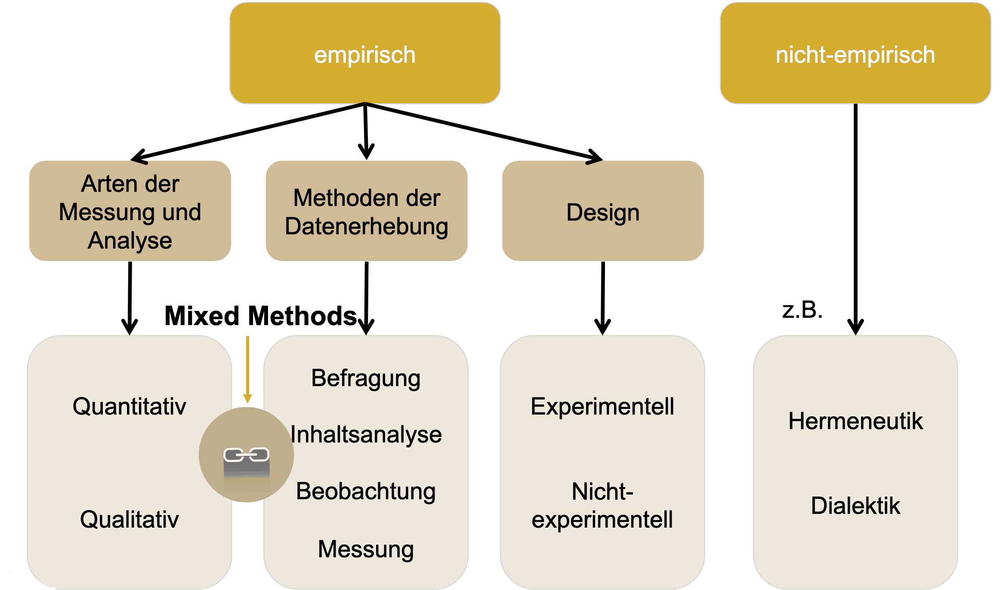

BA Befragung: Mediennutzung & -effekte
Mediennutzung zur Unterhaltung
Johannes Gutenberg-Universität Mainz
BA Befragung: Mediennutzung & -effekte KF C
Sommersemester 2025
Willkommen!
- Sie können horizontal durch die Sitzungen und vertikal innerhalb der Sitzungen navigieren
- Verwenden Sie die Pfeiltasten
- Verwenden Sie “M”, um das Menü zu öffnen
- Die Kurs-Website und alle Folien finden Sie unter https://felixdidi.github.io/25-1-be
- Drücken Sie
?auf Ihrer Tastatur, um mehr darüber zu erfahren, wie Sie durch die Folien navigieren können!
Sitzung 01: Einführung & Theoretische Grundlagen
Ressourcen für diese Sitzung
Zum Einstieg…
Bitte aufschreiben… so, dass Sie diese Notizen nächste Woche noch wiederfinden können
Wie lange benutzen Sie AM TAG YouTube?
Antwort: Eine exakte, gerade Zahl in Minuten, z.B. 10 Minuten oder 84 Minuten
Wie lange benutzen Sie IN DER WOCHE YouTube?
Antwort: Eine exakte, gerade Zahl in Minuten, z.B. 10 Minuten oder 84 Minuten
Wie häufig benutzen Sie YouTube?
Antwort eine von:
- nie
- einmal in der Woche
- mehrmals in der Woche
- täglich
- mehrmals täglich
Auswertung

Los geht’s!
Welche sind die wichtigsten Fragen, die in dieser Sitzung beantwortet werden sollen?
- Worum geht es in diesem Kurs?
- Was werde ich lernen?
- Was werde ich tun (müssen)?
Kurs-Website
- Verfügbar unter https://felixdidi.github.io/25-1-be
- Bitte nach dieser Sitzung im Detail ansehen
Kursmaterial
- Wird über die Kurs-Website (und Moodle) bereitgestellt
- Bitte prüfen Sie, ob Sie Zugang zur Moodle-Plattform haben
- Sie sollten automatisch zum Moodle-Kurs hinzugefügt werden
- Wenn Sie bis Ende dieser Woche keinen Zugang haben, schreiben Sie bitte eine E-Mail
Vorstellungsrunde

Über Felix
- Doktorand & wiss. Mitarbeiter
am Fachbereich Medienpsychologie
JGU Mainz
Meine Forschungsinteressen umfassen:
- Rezeption und Wirkung von Unterhaltungsmedien
- Algorithmische Kuratierung von Medieninhalten
- Digitale Autonomie & mentale Gesundheit
- Open & Computational Communication Science
Und Sie?
- Wie ist Ihr Name?
- Was ist Ihr Haupt- und Nebenfach?
- Hatten Sie im Studium schonmal Kontakt mit Forschung zu Unterhaltungsmedien? Wie groß ist Ihr Interesse an computergestützten Analysemethoden?
Worum geht es in diesem Kurs?
Unterhaltungserleben: Klassische Definition
In der kommunikationswissenschaftlichen Unterhaltungsforschung wird Medienunterhaltung meist als Rezeptionsphänomen definiert:
Unterhaltung ist, was Rezipienten als unterhaltsam wahrnehmen
Bosshart & Macconi (1998)
Traditionell wird das Unterhaltungserleben als angenehmer und positiver Erlebenszustand beschrieben:
“enjoyment typically has been defined using terms associated with pleasure and measured as a positive emotional reaction to content”
Raney & Bryant (2019, S. 324)
Die klassischen Definitionen des Unterhaltungserlebens nehmen somit eine rein hedonische Sichtweise ein: Unterhaltungserleben ist das reine Vergnügen an der Medienrezeption
Problem: Die rein hedonische Perspektive klassischer Unterhaltungstheorien vernachlässigt die Rezeption von Stimuli, die zunächst zu aversiven Reaktionen führen
Aktuelle Ansätze zum Unterhaltungserleben: Zwei-Prozess-Modelle
Neuere Zwei-Prozess-Modelle des Unterhaltungserlebens berücksichtigen auch die non-hedonische Seite der Medienunterhaltung
- Menschen streben nicht (nur) nach hedonischem Glück, sondern nach psychologischem Wachstum (Self-Determination Theory, Ryan & Deci, 2000)
- Grundlegende psych. Bedürfnisse:
- Kompetenz
- Autonomie
- Soziale Verbundenheit
- Mediennutzung orientiert sich an diesen Bedürfnissen (bspw. Tamborini et al., 2011)
- Statt Streben nach Unterhaltung, Suche nach “Meaningful Entertainment” (Oliver & Raney, 2011)
- Form des Genusses von Medien auf höherer kognitiver Ebene
- Wird empfunden bei:
- Moralischer/ästhetischer Schönheit
- Erinnerung an die eigene Endlichkeit und den Sinn des Lebens
Warum forschen wir dazu?
Psychologisches Wohlbefinden
“Optimal psychological functioning and experience”
Ryan & Deci (2001, p. 142)
- Fokus auf Glück und Lebenszufriedenheit
- Erreichen von Freude (positiver Affekt)
- Schmerzvermeidung (Vermeidung von negativem Affekt)
- Manchmal auch subjektives Wohlbefinden genannt
- Fokus auf volle Funktionsfähigkeit
- Bedeutsamkeit / Sinn (Meaning)
- Selbstverwirklichung
Zwei-Kontinua-Modelle der psychischen Gesundheit
im Zusammenhang mit computervermittelter Kommunikation, siehe Meier & Reinecke (2021)
- Psychische Erkrankung
- Persönliches Leiden
- Beeinträchtigung der Lebensfunktionen
- Dysfunktion
- Glück und Lebenszufriedenheit
- Persönliches Wachstum
- Entfaltung und Lebensqualität
Woher wissen wir, ob das alles stimmt? Wie können wir das überprüfen?
Empirische Wissenschaft
- Empirische Wissenschaft ist die systematische, intersubjektiv nachprüfbare Sammlung, Kontrolle und Kritik von Erfahrungen
- Den Ausgangspunkt der Forschung bildet eine Frage, eine Vorstellung bzw. Vermutung über reale Sachverhalte, also etwas Gedachtes, ein Begriff bzw. ein Problem
- Es folgt der Versuch einer theoretischen Erklärung in Form von Hypothesen oder Theorien
- Im dritten Schritt sind dann diese theoretischen Erklärungsversuche durch den Einsatz bestimmter Methoden zu überprüfen, indem sie an konkreten, erfahrbaren Sachverhalten getestet werden
- Ziel empirischer Forschung ist: (a) Beschreibung, (b) Erklärung und/oder (c) Prognose
Früh (2001, S. 19)
Ablaufplan: Von der Idee zur Antwort
Methoden der Kommunikationswissenschaft

Brosius et al. (2016)
Definitionen quantitative Befragung
“Die nebeneinander gebrauchten Begriffe Umfrageforschung und Demoskopie bezeichnen eine statistisch-psychologische Untersuchungsmethode, mit der gesellschaftliche Massenerscheinungen beobachtet und analysiert werden können.”
Noelle-Neumann & Petersen (2005, S. 619)
“Die standardisierte Befragung ist eine besondere Form der geplanten Kommunikation, die auf einem Fragebogen basiert. Ihr Ziel ist es, zahlreiche individuelle Antworten zu generieren, die in ihrer Gesamtheit zur Klärung einer Fragestellung beitragen.”
Möhring & Schlütz (2010, S. 14)
Befragungsmodi

Entscheidung für einen Modus
Welcher Befragungsmodus besser geeignet ist, hängt davon ab…
- was das Befragungsziel ist,
- wer befragt werden soll und welcher Grad an Repräsentativität erforderlich ist,
- was das Befragungsthema ist,
- wie schnell es gehen muss,
- wie viel Geld und Ressourcen man zur Verfügung hat
Was werde ich lernen?
Was werde ich lernen?
Expertise
- Forschung zur digitalen Mediennutzung, Fokus auf Unterhaltungsmediennutzung
- Kompetenz zum kritischen Umgang mit Forschungsergebnissen, besonders Befragungen
Methodische Kompetenz
- Entwicklung empirischer Forschungsdesigns als Befragungsdesign (Schwerpunkt Computational Communication Science)
- Durchführung und Dokumentation von Datenanalyse und Reflexion der methodischen Grenzen
Persönliche Kompetenz
- Problemlösungskompetenz bei forschungsorientierten Aufgaben
- Übertragung des Wissens auf ähnliche Fragestellungen
Was muss ich tun?
Was muss ich tun?
Seminar-Sitzungen
- Nehmen Sie an den Seminar-Sitzungen teil
Leseaufgaben & Lernvideos (siehe “Vorbereitung” im Seminarplan)
- Lesen Sie die bereitgestellte Literatur, um sich auf eine Seminar-Sitzung vorzubereiten
- Orientieren Sie sich bei der Lektüre an den Fragen, die am Ende der letzten Sitzung gestellt wurden
- Schauen Sie die bereitgestellten Lernvideos und stellen Sie Fragen dazu
Wie man liest und wie man nicht lesen sollte?
- Lesen Sie wissenschaftliche Literatur nicht wie einen Roman
- Beginnen Sie mit Titel, Zusammenfassung und Zwischenüberschriften, um einen ersten Eindruck zu gewinnen
- Wenn Sie digital lesen, suchen Sie nach Schlüsselwörtern
- Überlegen Sie: “Was will ich von diesem Text?”
- Beantworten Sie Ihre eigenen Fragen (ich werde auch einige stellen)
Was muss ich tun?
Keine Anwesenheitspflicht bedeutet…
- Sie erhalten alle grundlegenden Informationen im LMS und auf der Kurswebseite
- Sie können viele Kursinhalte selbständig vor- und nachbereiten
- Ein Teil der Aufgaben wird auf nicht-Präsenz-Zeiten verlagert
- Sie sind selbst verantwortlich, alle Inhalte aufzunehmen und alle zentralen Abgaben/Aufgaben/Voraussetzungen für die aktive Teilnahme zu erfüllen/im Blick zu behalten
- Wenn Sie nicht anwesend sind, es aber Gruppenarbeiten gibt, sind Sie selbst dafür verantwortlich, sich im Sinne der Gruppe einzubringen
- Gerade bei empirischen Kursen gibt es viele essenzielle Sitzungen, die direkt an den Erfolg in diesem Kurs geknüpft sind, d.h. kein Abschlussbericht ohne regelmäßige Anwesenheit oder sehr hohes Maß an eigenständiger Nachbereitung
Was muss ich tun?
Arbeit in den Arbeitsgruppen
- Gruppenarbeit im Seminar: ca. 4 Studierende pro Gruppe
- Maximal 5 Arbeitsgruppen im Seminar
- Prinzip: “Learning by doing”
- Studierende sammeln praktische Erfahrungen in Arbeitsgruppen (AGs)
- Austausch mit anderen AGs: Kennenlernen von Methoden, Themen und Arbeitsweisen
- Feedback geben und erhalten: zur eigenen und zu anderer AG-Arbeit
Diverse Aufgaben (nicht benotet)
- Dienen dem Projektfortschritt und sind von allen Kursteilnehmer:innen zu erbringen
Was muss ich tun?
| Anforderung | Abgabe | Deadline |
|---|---|---|
| Aktive Teilnahme an Diskussionen und Gruppenarbeiten im Kurs | Fortlaufend | |
| Sitzungsvorbereitung durch Literatur-Lektüre & -Recherche | Fortlaufend | |
| Einreichen von jeweils einer Verständnis- oder Diskussionsfrage zu den Videos | E-Mail an den Dozenten | Dienstag vor der jeweiligen Sitzung (22.04. & 06.05.), 23:59 Uhr |
| Individuelle Abgabe einer vorläufigen Problemstellung/übergeordneten Frage für das Forschungsprojekt | E-Mail an den Dozenten | Sonntag, 27.04., 23:59 Uhr |
| Individuelle Abgabe einer überarbeiteten Problemstellung/übergeordneten Frage für das Forschungsprojekt | E-Mail an den Dozenten | Sonntag, 11.05., 23:59 Uhr |
Was muss ich tun?
| Anforderung | Abgabe | Deadline |
|---|---|---|
| Gruppen-Abgabe eines Proposals für das Forschungsprojekt | E-Mail an den Dozenten | Sonntag, 18.05., 23:59 Uhr |
| Gruppen-Abgabe der (vorläufigen) Präregistrierung für das Forschungsprojekt | E-Mail an den Dozenten | Sonntag, 18.05., 23:59 Uhr |
| Pretest des Fragebogens & Rekrutierung von Studienteilnehmenden | Donnerstag, 05.06., 16:15 Uhr | |
| Abschlusspräsentation | E-Mail an den Dozenten | Abgabe Dienstag, 15.07., 23:59 Uhr, Präsentation Donnerstag, 17.07., 16:15 Uhr |
Was muss ich tun?
Benotete Leistung (“Prüfungsleistung”)
- Informationen auf der Kurswebsite & in der letzten Sitzung
Seminarübersicht
Theoretische Grundlagen & Empirische Umsetzung
| Datum | Thema | Ziele |
|---|---|---|
| 17.04.25 | Einführung, Organisation & Theoretische Grundlagen | |
| 24.04.25 | Digitale Verhaltensdaten* | |
| 01.05.25 | Keine Sitzung: Feiertag | |
| 08.05.25 | Situative Befragungsdesigns* | |
| 15.05.25 | Open Science | |
| 22.05.25 | Projekt-Sitzung | Präregistrierung |
| 29.05.25 | Keine Sitzung: Feiertag | Pretest |
| 05.06.25 | Projekt-Sitzung | Fragebogen |
| 12.06.25 | Keine Sitzung: Dienstreise | Feldphase |
| 19.06.25 | Keine Sitzung: Feiertag | Feldphase |
Seminarübersicht
Auswertung & Aufbereitung
| Datum | Thema | Ziele |
|---|---|---|
| 26.06.25 | Datenaufbereitung* | |
| 03.07.25 | Hypothesentests | |
| 10.07.25 | Projekt-Sitzung | |
| 17.07.25 | Semesterabschluss und Informationen zum Projektbericht | Projekt-Präsentation |
| 01.09.25 | Einreichungsfrist für Hausarbeiten |
Hinweis: Die Seminarstruktur kann an die individuellen Bedürfnisse und Interessen der Projektgruppen angepasst werden. Sitzungen, die mit einem Sternchen markiert sind, qualifizieren anteilig für den Computional Methods Track.
Allgemeine Literatur
Siehe Kurswebseite
Soweit Fragen?
Vorbereitung auf die kommende Sitzung
Siehe Vorbereitung Sitzung 2:
Lernvideos anschauen, Fragen einreichen, Literatur lesen, YouTube Takeout-Daten anfragen
Literaturangaben